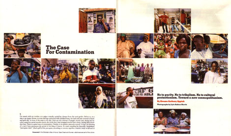

|

January 1, 2006
The Case For Contamination
By KWAME ANTHONY APPIAH
1.
I'm seated, with my mother, on a palace veranda, cooled by a breeze from the royal garden. Before us, on a dais, is an empty throne, its arms and legs embossed with polished brass, the back and seat covered in black-and-gold silk. In front of the steps to the dais, there are two columns of people, mostly men, facing one another, seated on carved wooden stools, the cloths they wear wrapped around their chests, leaving their shoulders bare. There is a quiet buzz of conversation. Outside in the garden, peacocks screech. At last, the blowing of a ram's horn announces the arrival of the king of Asante, its tones sounding his honorific, kotokohene, ''porcupine chief.'' (Each quill of the porcupine, according to custom, signifies a warrior ready to kill and to die for the kingdom.) Everyone stands until the king has settled on the throne. Then, when we sit, a chorus sings songs in praise of him, which are interspersed with the playing of a flute. It is a Wednesday festival day in Kumasi, the town in Ghana where I grew up.
Unless you're one of a few million Ghanaians, this will probably seem a relatively unfamiliar world, perhaps even an exotic one. You might suppose that this Wednesday festival belongs quaintly to an African past. But before the king arrived, people were taking calls on cellphones, and among those passing the time in quiet conversation were a dozen men in suits, representatives of an insurance company. And the meetings in the office next to the veranda are about contemporary issues: H.I.V./AIDS, the educational needs of 21st-century children, the teaching of science and technology at the local university. When my turn comes to be formally presented, the king asks me about Princeton, where I teach. I ask him when he'll next be in the States. In a few weeks, he says cheerfully. He's got a meeting with the head of the World Bank.
Anywhere you travel in the world -- today as always -- you can find ceremonies like these, many of them rooted in centuries-old traditions. But you will also find everywhere -- and this is something new -- many intimate connections with places far away: Washington, Moscow, Mexico City, Beijing. Across the street from us, when we were growing up, there was a large house occupied by a number of families, among them a vast family of boys; one, about my age, was a good friend. He lives in London. His brother lives in Japan, where his wife is from. They have another brother who has been in Spain for a while and a couple more brothers who, last I heard, were in the United States. Some of them still live in Kumasi, one or two in Accra, Ghana's capital. Eddie, who lives in Japan, speaks his wife's language now. He has to. But he was never very comfortable in English, the language of our government and our schools. When he phones me from time to time, he prefers to speak Asante-Twi.
Over the years, the royal palace buildings in Kumasi have expanded. When I was a child, we used to visit the previous king, my great-uncle by marriage, in a small building that the British had allowed his predecessor to build when he returned from exile in the Seychelles to a restored but diminished Asante kingship. That building is now a museum, dwarfed by the enormous house next door -- built by his successor, my uncle by marriage -- where the current king lives. Next to it is the suite of offices abutting the veranda where we were sitting, recently finished by the present king, my uncle's successor. The British, my mother's people, conquered Asante at the turn of the 20th century; now, at the turn of the 21st, the palace feels as it must have felt in the 19th century: a center of power. The president of Ghana comes from this world, too. He was born across the street from the palace to a member of the royal Oyoko clan. But he belongs to other worlds as well: he went to Oxford University; he's a member of one of the Inns of Court in London; he's a Catholic, with a picture of himself greeting the pope in his sitting room.
What are we to make of this? On Kumasi's Wednesday festival day, I've seen visitors from England and the United States wince at what they regard as the intrusion of modernity on timeless, traditional rituals -- more evidence, they think, of a pressure in the modern world toward uniformity. They react like the assistant on the film set who's supposed to check that the extras in a sword-and-sandals movie aren't wearing wristwatches. And such purists are not alone. In the past couple of years, Unesco's members have spent a great deal of time trying to hammer out a convention on the ''protection and promotion'' of cultural diversity. (It was finally approved at the Unesco General Conference in October 2005.) The drafters worried that ''the processes of globalization. . .represent a challenge for cultural diversity, namely in view of risks of imbalances between rich and poor countries.'' The fear is that the values and images of Western mass culture, like some invasive weed, are threatening to choke out the world's native flora.
The contradictions in this argument aren't hard to find. This same Unesco document is careful to affirm the importance of the free flow of ideas, the freedom of thought and expression and human rights -- values that, we know, will become universal only if we make them so. What's really important, then, cultures or people? In a world where Kumasi and New York -- and Cairo and Leeds and Istanbul -- are being drawn ever closer together, an ethics of globalization has proved elusive.
The right approach, I think, starts by taking individuals -- not nations, tribes or ''peoples'' -- as the proper object of moral concern. It doesn't much matter what we call such a creed, but in homage to Diogenes, the fourth-century Greek Cynic and the first philosopher to call himself a ''citizen of the world,'' we could call it cosmopolitan. Cosmopolitans take cultural difference seriously, because they take the choices individual people make seriously. But because cultural difference is not the only thing that concerns them, they suspect that many of globalization's cultural critics are aiming at the wrong targets.
Yes, globalization can produce homogeneity. But globalization is also a threat to homogeneity. You can see this as clearly in Kumasi as anywhere. One thing Kumasi isn't -- simply because it's a city -- is homogeneous. English, German, Chinese, Syrian, Lebanese, Burkinabe, Ivorian,
Nigerian, Indian: I can find you families of each description. I can find you Asante people, whose ancestors have lived in this town for centuries, but also Hausa households that have been around for centuries, too. There are people there from every region of the country as well, speaking scores of languages. But if you travel just a little way outside Kumasi -- 20 miles, say, in the right direction -- and if you drive off the main road down one of the many potholed side roads of red laterite, you won't have difficulty finding villages that are fairly monocultural. The people have mostly been to Kumasi and seen the big, polyglot, diverse world of the city. Where they live, though, there is one everyday language (aside from the English in the government schools) and an agrarian way of life based on some old crops, like yams, and some newer ones, like cocoa, which arrived in the late 19th century as a product for export. They may or may not have electricity. (This close to Kumasi, they probably do.) When people talk of the homogeneity produced by globalization, what they are talking about is this: Even here, the villagers will have radios (though the language will be local); you will be able to get a discussion going about Ronaldo, Mike Tyson or Tupac; and you will probably be able to find a bottle of Guinness or Coca-Cola (as well as of Star or Club, Ghana's own fine lagers). But has access to these things made the place more homogeneous or less? And what can you tell about people's souls from the fact that they drink Coca-Cola?
It's true that the enclaves of homogeneity you find these days -- in Asante as in Pennsylvania -- are less distinctive than they were a century ago, but mostly in good ways. More of them have access to effective medicines. More of them have access to clean drinking water, and more of them have schools. Where, as is still too common, they don't have these things, it's something not to celebrate but to deplore. And whatever loss of difference there has been, they are constantly inventing new forms of difference: new hairstyles, new slang, even, from time to time, new religions. No one could say that the world's villages are becoming anything like the same.
So why do people in these places sometimes feel that their identities are threatened? Because the world, their world, is changing, and some of them don't like it. The pull of the global economy -- witness those cocoa trees, whose chocolate is eaten all around the world -- created some of the life they now live. If chocolate prices were to collapse again, as they did in the early 1990's, Asante farmers might have to find new crops or new forms of livelihood. That prospect is unsettling for some people (just as it is exciting for others). Missionaries came awhile ago, so many of these villagers will be Christian, even if they have also kept some of the rites from earlier days. But new Pentecostal messengers are challenging the churches they know and condemning the old rites as idolatrous. Again, some like it; some don't.
Above all, relationships are changing. When my father was young, a man in a village would farm some land that a chief had granted him, and his maternal clan (including his younger brothers) would work it with him. When a new house needed building, he would organize it. He would also make sure his dependents were fed and clothed, the children educated, marriages and funerals arranged and paid for. He could expect to pass the farm and the responsibilities along to the next generation.
Nowadays, everything is different. Cocoa prices have not kept pace with the cost of living. Gas prices have made the transportation of the crop more expensive. And there are new possibilities for the young in the towns, in other parts of the country and in other parts of the world. Once, perhaps, you could have commanded the young ones to stay. Now they have the right to leave -- perhaps to seek work at one of the new data-processing centers down south in the nation's capital -- and, anyway, you may not make enough to feed and clothe and educate them all. So the time of the successful farming family is passing, and those who were settled in that way of life are as sad to see it go as American family farmers are whose lands are accumulated by giant agribusinesses. We can sympathize with them. But we cannot force their children to stay in the name of protecting their authentic culture, and we cannot afford to subsidize indefinitely thousands of distinct islands of homogeneity that no longer make economic sense.
Nor should we want to. Human variety matters, cosmopolitans think, because people are entitled to options. What John Stuart Mill said more than a century ago in ''On Liberty'' about diversity within a society serves just as well as an argument for variety across the globe: ''If it were only that people have diversities of taste, that is reason enough for not attempting to shape them all after one model. But different persons also require different conditions for their spiritual development; and can no more exist healthily in the same moral, than all the variety of plants can exist in the same physical, atmosphere and climate. The same things which are helps to one person towards the cultivation of his higher nature, are hindrances to another.. . .Unless there is a corresponding diversity in their modes of life, they neither obtain their fair share of happiness, nor grow up to the mental, moral, and aesthetic stature of which their nature is capable.'' If we want to preserve a wide range of human conditions because it allows free people the best chance to make their own lives, we can't enforce diversity by trapping people within differences they long to escape.
2.
Even if you grant that people shouldn't be compelled to sustain the older cultural practices, you might suppose that cosmopolitans should side with those who are busy around the world ''preserving culture'' and resisting ''cultural imperialism.'' Yet behind these slogans you often find some curious assumptions. Take ''preserving culture.'' It's one thing to help people sustain arts they want to sustain. I am all for festivals of Welsh bards in Llandudno financed by the Welsh arts council. Long live the Ghana National Cultural Center in Kumasi, where you can go and learn traditional Akan dancing and drumming, especially since its classes are spirited and overflowing. Restore the deteriorating film stock of early Hollywood movies; continue the preservation of Old Norse and early Chinese and Ethiopian manuscripts; record, transcribe and analyze the oral narratives of Malay and Masai and Maori. All these are undeniably valuable.
But preserving culture -- in the sense of such cultural artifacts -- is different from preserving cultures. And the cultural preservationists often pursue the latter, trying to ensure that the Huli of Papua New Guinea (or even Sikhs in Toronto) maintain their ''authentic'' ways. What makes a cultural expression authentic, though? Are we to stop the importation of baseball caps into Vietnam so that the Zao will continue to wear their colorful red headdresses? Why not ask the Zao? Shouldn't the choice be theirs?
''They have no real choice,'' the cultural preservationists say. ''We've dumped cheap Western clothes into their markets, and they can no longer afford the silk they used to wear. If they had what they really wanted, they'd still be dressed traditionally.'' But this is no longer an argument about authenticity. The claim is that they can't afford to do something that they'd really like to do, something that is expressive of an identity they care about and want to sustain. This is a genuine problem, one that afflicts people in many communities: they're too poor to live the life they want to lead. But if they do get richer, and they still run around in T-shirts, that's their choice. Talk of authenticity now just amounts to telling other people what they ought to value in their own traditions.
Not that this is likely to be a problem in the real world. People who can afford it mostly like to put on traditional garb -- at least from time to time. I was best man once at a Scottish wedding at which the bridegroom wore a kilt and I wore kente cloth. Andrew Oransay, the islander who piped us up the aisle, whispered in my ear at one point, ''Here we all are then, in our tribal gear.'' In Kumasi, people who can afford them love to put on their kente cloths, especially the most ''traditional'' ones, woven in colorful silk strips in the town of Bonwire, as they have been for a couple of centuries. (The prices are high in part because demand outside Asante has risen. A fine kente for a man now costs more than the average Ghanaian earns in a year. Is that bad? Not for the people of Bonwire.)
Besides, trying to find some primordially authentic culture can be like peeling an onion. The textiles most people think of as traditional West African cloths are known as Java prints; they arrived in the 19th century with the Javanese batiks sold, and often milled, by the Dutch. The traditional garb of Herero women in Namibia derives from the attire of 19th-century German missionaries, though it is still unmistakably Herero, not least because the fabrics used have a distinctly un-Lutheran range of colors. And so with our kente cloth: the silk was always imported, traded by Europeans, produced in Asia. This tradition was once an innovation. Should we reject it for that reason as untraditional? How far back must one go? Should we condemn the young men and women of the University of Science and Technology, a few miles outside Kumasi, who wear European-style gowns for graduation, lined with kente strips (as they do now at Howard and Morehouse, too)? Cultures are made of continuities and changes, and the identity of a society can survive through these changes. Societies without change aren't authentic; they're just dead.
3.
The preservationists often make their case by invoking the evil of ''cultural imperialism.'' Their underlying picture, in broad strokes, is this: There is a world system of capitalism. It has a center and a periphery. At the center -- in Europe and the United States -- is a set of multinational corporations. Some of these are in the media business. The products they sell around the world promote the creation of desires that can be fulfilled only by the purchase and use of their products. They do this explicitly through advertising, but more insidiously, they also do so through the messages implicit in movies and in television drama. Herbert Schiller, a leading critic of ''media-cultural imperialism,'' claimed that ''it is the imagery and cultural perspectives of the ruling sector in the center that shape and structure consciousness throughout the system at large.''
That's the theory, anyway. But the evidence doesn't bear it out. Researchers have actually gone out into the world and explored the responses to the hit television series ''Dallas'' in Holland and among Israeli Arabs, Moroccan Jewish immigrants, kibbutzniks and new Russian immigrants to Israel. They have examined the actual content of the television media -- whose penetration of everyday life far exceeds that of film -- in Australia, Brazil, Canada, India and Mexico. They have looked at how American popular culture was taken up by the artists of Sophiatown, in South Africa. They have discussed ''Days of Our Lives'' and ''The Bold and the Beautiful'' with Zulu college students from traditional backgrounds.
And one thing they've found is that how people respond to these cultural imports depends on their existing cultural context. When the media scholar Larry Strelitz spoke to students from KwaZulu-Natal, he found that they were anything but passive vessels. One of them, Sipho -- a self-described ''very, very strong Zulu man'' -- reported that he had drawn lessons from watching the American soap opera ''Days of Our Lives,'' ''especially relationship-wise.'' It fortified his view that ''if a guy can tell a woman that he loves her, she should be able to do the same.'' What's more, after watching the show, Sipho ''realized that I should be allowed to speak to my father. He should be my friend rather than just my father.'' It seems doubtful that that was the intended message of multinational capitalism's ruling sector.
But Sipho's response also confirmed that cultural consumers are not dupes. They can adapt products to suit their own needs, and they can decide for themselves what they do and do not approve of. Here's Sipho again:
''In terms of our culture, a girl is expected to enter into relationships when she is about 20. In the Western culture, a girl can be exposed to a relationship as early as 15 or 16. That one we shouldn't adopt in our culture. Another thing we shouldn't adopt from the Western culture has to do with the way they treat elderly people. I wouldn't like my family to be sent into an old-age home.''
It wouldn't matter whether the ''old-age homes'' in American soap operas were safe places, full of kindly people. That wouldn't sell the idea to Sipho. Dutch viewers of ''Dallas'' saw not the pleasures of conspicuous consumption among the superrich -- the message that theorists of ''cultural imperialism'' find in every episode -- but a reminder that money and power don't protect you from tragedy. Israeli Arabs saw a program that confirmed that women abused by their husbands should return to their fathers. Mexican telenovelas remind Ghanaian women that, where sex is at issue, men are not to be trusted. If the telenovelas tried to tell them otherwise, they wouldn't believe it.
Talk of cultural imperialism ''structuring the consciousnesses'' of those in the periphery treats people like Sipho as blank slates on which global capitalism's moving finger writes its message, leaving behind another cultural automaton as it moves on. It is deeply condescending. And it isn't true.
In fact, one way that people sometimes respond to the onslaught of ideas from the West is to turn them against their originators. It's no accident that the West's fiercest adversaries among other societies tend to come from among the most Westernized of the group. Who in Ghana excoriated the British colonizers and built the movement for independence? Not the farmers and the peasants. Not the chiefs. It was the Western-educated bourgeoisie. And when Kwame Nkrumah -- who went to college in Pennsylvania and lived in London -- created a nationalist mass movement, at its core were soldiers who had returned from fighting a war in the British Army, urban market women who traded Dutch prints, unionists who worked in industries created by colonialism and the so-called veranda boys, who had been to colonial schools, learned English and studied history and geography in textbooks written in England. Who led the resistance to the British Raj? An Indian-born South African lawyer, trained in the British courts, whose name was Gandhi; an Indian named Nehru, who wore Savile Row suits and sent his daughter to an English boarding school; and Muhammad Ali Jinnah, founder of Pakistan, who joined Lincoln's Inn in London and became a barrister at the age of 19. The independence movements of the postwar world that led to the end of Europe's African and Asian empires were driven by the rhetoric that had guided the Allies' own struggle against Germany and Japan: democracy, freedom, equality. This wasn't a conflict between values. It was a conflict of interests couched in terms of the same values.
4.
Sometimes, though, people react to the incursions of the modern world not by appropriating the values espoused by the liberal democracies but by inverting them. One recent result has been a new worldwide fraternity that presents cosmopolitanism with something of a sinister mirror image. Indeed, you could think of its members as counter-cosmopolitans. They believe in human dignity across the nations, and they live their creed. They share these ideals with people in many countries, speaking many languages. As thoroughgoing globalists, they make full use of the World Wide Web. They resist the crass consumerism of modern Western society and deplore its influence in the rest of the world. But they also resist the temptations of the narrow nationalisms of the countries where they were born, along with the humble allegiances of kith and kin. They resist such humdrum loyalties because they get in the way of the one thing that matters: building a community of enlightened men and women across the world. That is one reason they reject traditional religious authorities (though they disapprove, too, of their obscurantism and temporizing). Sometimes they agonize in their discussions about whether they can reverse the world's evils or whether their struggle is hopeless. But mostly they soldier on in their efforts to make the world a better place.
These are not the heirs of Diogenes the Cynic. The community these comrades are building is not a polis; it's what they call the ummah, the global community of Muslims, and it is open to all who share their faith. They are young, global Muslim fundamentalists. The ummah's new globalists consider that they have returned to the fundamentals of Islam; much of what passes for Islam in the world, much of what has passed as Islam for centuries, they think a sham. As the French scholar Olivier Roy has observed, these religionists -- his term for them is ''neofundamentalists'' -- wish to cleanse Islam's pristine and universal message from the contingencies of mere history, of local cultures. For them, Roy notes, ''globalization is a good opportunity to dissociate Islam from any given culture and to provide a model that could work beyond any culture.'' They have taken a set of doctrines that once came with a form of life, in other words, and thrown away that form of life.
Now, the vast majority of these fundamentalists are not going to blow anybody up. So they should not be confused with those other Muslims --the ''radical neofundamentalists,'' Roy calls them -- who want to turn jihad, interpreted as literal warfare against the West, into the sixth pillar of Islam. Whether to endorse the use of violence is a political decision, even if it is to be justified in religious terms. Nonetheless, the neofundamentalists present a classic challenge to cosmopolitanism, because they, too, offer a moral and, in its way, inclusive universalism.
Unlike cosmopolitanism, of course, it is universalist without being tolerant, and such intolerant universalism has often led to murder. It underlay the French Wars of Religion that bloodied the four decades before the Edict of Nantes of 1598, in which Henri IV of France finally granted to the Protestants in his realm the right to practice their faith. In the Thirty Years' War, which ravaged central Europe until 1648 and the Peace of Westphalia, Protestant and Catholic princes from Austria to Sweden struggled with one another, and hundreds of thousands of Germans died in battle. Millions starved or died of disease as roaming armies pillaged the countryside. The period of religious conflict in the British Isles, from the first Bishops' War of 1639 to the end of the English Civil War in 1651, which pitted Protestant armies against the forces of a Catholic king, resulted in the deaths of perhaps 10 percent of the population. All these conflicts involved issues beyond sectarian doctrine, of course. Still, many Enlightenment liberals drew the conclusion that enforcing one vision of universal truth could only lead the world back to the blood baths.
Yet tolerance by itself is not what distinguishes the cosmopolitan from the neofundamentalist. There are plenty of things that the heroes of radical Islam are happy to tolerate. They don't care if you eat kebabs or meatballs or kung pao chicken, as long as the meat is halal; your hijab can be silk or linen or viscose. At the same time, there are plenty of things that cosmopolitans will not tolerate. We will sometimes want to intervene in other places because what is going on there violates our principles so deeply. We, too, can see moral error. And when it is serious enough -- genocide is the least-controversial case -- we will not stop with conversation. Toleration has its limits.
Nor can you tell us apart by saying that the neofundamentalists believe in universal truth. Cosmopolitans believe in universal truth, too, though we are less certain that we already have all of it. It is not skepticism about the very idea of truth that guides us; it is realism about how hard the truth is to find. One tenet we hold to, however, is that every human being has obligations to every other. Everybody matters: that is our central idea. And again, it sharply limits the scope of our tolerance.
To say what, in principle, distinguishes the cosmopolitan from competing universalisms, we plainly need to go beyond talk of truth and tolerance. One distinctively cosmopolitan commitment is to pluralism. Cosmopolitans think that there are many values worth living by and that you cannot live by all of them. So we hope and expect that different people and different societies will embody different values. Another aspect of cosmopolitanism is what philosophers call fallibilism -- the sense that our knowledge is imperfect, provisional, subject to revision in the face of new evidence.
The neofundamentalist conception of a global ummah, by contrast, admits of local variations -- but only in matters that don't matter. These counter-cosmopolitans, like many Christian fundamentalists, do think that there is one right way for all human beings to live; that all the differences must be in the details. If what concerns you is global homogeneity, then this utopia, not the world that capitalism is producing, is the one you should worry about. Still, the universalisms in the name of religion are hardly the only ones that invert the cosmopolitan creed. In the name of universal humanity, you can be the kind of Marxist, like Mao or Pol Pot, who wants to eradicate all religion, just as easily as you can be the Grand Inquisitor supervising an auto-da-fé. All of these men want everyone on their side, so we can share with them the vision in their mirror. ''Indeed, I'm a trustworthy adviser to you,'' Osama bin Laden said in a 2002 ''message to the American people.'' ''I invite you to the happiness of this world and the hereafter and to escape your dry, miserable, materialistic life that is without soul. I invite you to Islam, that calls to follow of the path of Allah alone Who has no partners, the path which calls for justice and forbids oppression and crimes.'' Join us, the counter-cosmopolitans say, and we will all be sisters and brothers. But each of them plans to trample on our differences -- to trample us to death, if necessary -- if we will not join them. Their motto might as well be the sardonic German saying Und willst du nicht mein Bruder sein, So schlag' ich Dir den Schädel ein. (If you don't want to be my brother, then I'll smash your skull in.)
That liberal pluralists are hostile to certain authoritarian ways of life -- that they're intolerant of radical intolerance -- is sometimes seen as kind of self-refutation. That's a mistake: you can care about individual freedom and still understand that the contours of that freedom will vary considerably from place to place. But we might as well admit that a concern for individual freedom isn't something that will appeal to every individual. In politics, including cultural politics, there are winners and losers -- which is worth remembering when we think about international human rights treaties. When we seek to embody our concern for strangers in human rights law, and when we urge our government to enforce it, we are seeking to change the world of law in every nation on the planet. We have declared slavery a violation of international law. And, in so doing, we have committed ourselves, at a minimum, to the desirability of its eradication everywhere. This is no longer controversial in the capitals of the world. No one defends enslavement. But international treaties define slavery in ways that arguably include debt bondage, and debt bondage is a significant economic institution in parts of South Asia. I hold no brief for debt bondage. Still, we shouldn't be surprised if people whose incomes and style of life depend upon it are angry.
It's the same with the international movements to promote women's equality. We know that many Islamists are deeply disturbed by the way Western men and women behave. We permit women to swim almost naked with strange men, which is our business, but it is hard to keep the news of these acts of immodesty from Muslim women and children or to protect Muslim men from the temptations they inevitably create. As the Internet extends its reach, it will get even harder, and their children, especially their girls, will be tempted to ask for these freedoms, too. Worse, they say, we are now trying to force our conception of how women and men should behave upon them. We speak of women's rights. We make treaties enshrining these rights. And then we want their governments to enforce them.
Like many people in every nation, I support those treaties; I believe that women, like men, should have the vote, should be entitled to work outside their homes, should be protected from the physical abuse of men, including their fathers, brothers and husbands. But I also know that the changes these freedoms would bring will change the balance of power between men and women in everyday life. How do I know this? Because I have lived most of my adult life in the West as it has gone through just such a transition, and I know that the process is not yet complete.
So liberty and diversity may well be at odds, and the tensions between them aren't always easily resolved. But the rhetoric of cultural preservation isn't any help. Again, the contradictions are near to hand. Take another look at that Unesco Convention. It affirms the ''principle of equal dignity of and respect for all cultures.'' (What, all cultures -- including those of the K.K.K. and the Taliban?) It also affirms ''the importance of culture for social cohesion in general, and in particular its potential for the enhancement of the status and role of women in society.'' (But doesn't ''cohesion'' argue for uniformity? And wouldn't enhancing the status and role of women involve changing, rather than preserving, cultures?) In Saudi Arabia, people can watch ''Will and Grace'' on satellite TV -- officially proscribed, but available all the same -- knowing that, under Saudi law, Will could be beheaded in a public square. In northern Nigeria, mullahs inveigh against polio vaccination while sentencing adulteresses to death by stoning. In India, thousands of wives are burned to death each year for failing to make their dowry payments. Vive la différence? Please.
5.
Living cultures do not, in any case, evolve from purity into contamination; change is more a gradual transformation from one mixture to a new mixture, a process that usually takes place at some distance from rules and rulers, in the conversations that occur across cultural boundaries. Such conversations are not so much about arguments and values as about the exchange of perspectives. I don't say that we can't change minds, but the reasons we offer in our conversation will seldom do much to persuade others who do not share our fundamental evaluative judgments already. When we make judgments, after all, it's rarely because we have applied well-thought-out principles to a set of facts and deduced an answer. Our efforts to justify what we have done -- or what we plan to do -- are typically made up after the event, rationalizations of what we have decided intuitively to do. And a good deal of what we intuitively take to be right, we take to be right just because it is what we are used to. That does not mean, however, that we cannot become accustomed to doing things differently.
Consider the practice of foot-binding in China, which persisted for a thousand years -- and was largely eradicated within a generation. The anti-foot-binding campaign, in the 1910's and 1920's, did circulate facts about the disadvantages of bound feet, but those couldn't have come as news to most people. Perhaps more effective was the campaign's emphasis that no other country went in for the practice; in the world at large, then, China was ''losing face'' because of it. (To China's cultural preservationists, of course, the fact that the practice was peculiar to the region was entirely a mark in its favor.) Natural-foot societies were formed, with members forswearing the practice and further pledging that their sons would not marry women with bound feet. As the movement took hold, scorn was heaped on older women with bound feet, and they were forced to endure the agonies of unbinding. What had been beautiful became ugly; ornamentation became disfigurement. The appeal to reason can explain neither the custom nor its abolition.
So, too, with other social trends. Just a couple of generations ago, most people in most of the industrialized world thought that middle-class women would ideally be housewives and mothers. If they had time on their hands, they could engage in charitable work or entertain one another; a few of them might engage in the arts, writing novels, painting, performing in music, theater and dance. But there was little place for them in the ''learned professions'' -- as lawyers or doctors, priests or rabbis; and if they were to be academics, they would teach young women and probably remain unmarried. They were not likely to make their way in politics, except perhaps at the local level. And they were not made welcome in science.
How much of the shift away from these assumptions is a result of arguments? Isn't a significant part of it just the consequence of our getting used to new ways of doing things? The arguments that kept the old pattern in place were not -- to put it mildly -- terribly good. If the reasons for the old sexist way of doing things had been the problem, the women's movement could have been done in a couple of weeks.
Consider another example: In much of Europe and North America, in places where a generation ago homosexuals were social outcasts and homosexual acts were illegal, lesbian and gay couples are increasingly being recognized by their families, by society and by the law. This is true despite the continued opposition of major religious groups and a significant and persisting undercurrent of social disapproval. Both sides make arguments, some good, most bad. But if you ask the social scientists what has produced this change, they will rightly not start with a story about reasons. They will give you a historical account that concludes with a sort of perspectival shift. The increasing presence of ''openly gay'' people in social life and in the media has changed our habits. And over the last 30 years or so, instead of thinking about the private activity of gay sex, many Americans and Europeans started thinking about the public category of gay people.
One of the great savants of the postwar era, John von Neumann, liked to say, mischievously, that ''in mathematics you don't understand things, you just get used to them.'' As in mathematical arguments, so in moral ones. Now, I don't deny that all the time, at every stage, people were talking, giving one another reasons to do things: accept their children, stop treating homosexuality as a medical disorder, disagree with their churches, come out. Still, the short version of the story is basically this: People got used to lesbians and gay men. I am urging that we should learn about people in other places, take an interest in their civilizations, their arguments, their errors, their achievements, not because that will bring us to agreement but because it will help us get used to one another -- something we have a powerful need to do in this globalized era. If that is the aim, then the fact that we have all these opportunities for disagreement about values need not put us off. Understanding one another may be hard; it can certainly be interesting. But it doesn't require that we come to agreement.
6.
The ideals of purity and preservation have licensed a great deal of mischief in the past century, but they have never had much to do with lived culture. Ours may be an era of mass migration, but the global spread and hybridization of culture -- through travel, trade or conquest -- is hardly a recent development. Alexander's empire molded both the states and the sculpture of Egypt and North India; the Mongols and then the Mughals shaped great swaths of Asia; the Bantu migrations populated half the African continent. Islamic states stretch from Morocco to Indonesia; Christianity reached Africa, Europe and Asia within a few centuries of the death of Jesus of Nazareth; Buddhism long ago migrated from India into much of East and Southeast Asia. Jews and people whose ancestors came from many parts of China have long lived in vast diasporas. The traders of the Silk Road changed the style of elite dress in Italy; someone buried Chinese pottery in 15th-century Swahili graves. I have heard it said that the bagpipes started out in Egypt and came to Scotland with the Roman infantry. None of this is modern.
Our guide to what is going on here might as well be a former African slave named Publius Terentius Afer, whom we know as Terence. Terence, born in Carthage, was taken to Rome in the early second century B.C., and his plays -- witty, elegant works that are, with Plautus's earlier, less-cultivated works, essentially all we have of Roman comedy -- were widely admired among the city's literary elite. Terence's own mode of writing -- which involved freely incorporating any number of earlier Greek plays into a single Latin one -- was known to Roman littérateurs as ''contamination.''
It's an evocative term. When people speak for an ideal of cultural purity, sustaining the authentic culture of the Asante or the American family farm, I find myself drawn to contamination as the name for a counterideal. Terence had a notably firm grasp on the range of human variety: ''So many men, so many opinions'' was a line of his. And it's in his comedy ''The Self-Tormentor'' that you'll find what may be the golden rule of cosmopolitanism -- Homo sum: humani nil a me alienum puto; ''I am human: nothing human is alien to me.'' The context is illuminating. A busybody farmer named Chremes is told by his neighbor to mind his own affairs; the homo sum credo is Chremes's breezy rejoinder. It isn't meant to be an ordinance from on high; it's just the case for gossip. Then again, gossip -- the fascination people have for the small doings of other people -- has been a powerful force for conversation among cultures.
The ideal of contamination has few exponents more eloquent than Salman Rushdie, who has insisted that the novel that occasioned his fatwa ''celebrates hybridity, impurity, intermingling, the transformation that comes of new and unexpected combinations of human beings, cultures, ideas, politics, movies, songs. It rejoices in mongrelisation and fears the absolutism of the Pure. Mélange, hotch-potch, a bit of this and a bit of that is how newness enters the world.'' No doubt there can be an easy and spurious utopianism of ''mixture,'' as there is of ''purity'' or ''authenticity.'' And yet the larger human truth is on the side of contamination -- that endless process of imitation and revision.
A tenable global ethics has to temper a respect for difference with a respect for the freedom of actual human beings to make their own choices. That's why cosmopolitans don't insist that everyone become cosmopolitan. They know they don't have all the answers. They're humble enough to think that they might learn from strangers; not too humble to think that strangers can't learn from them. Few remember what Chremes says after his ''I am human'' line, but it is equally suggestive: ''If you're right, I'll do what you do. If you're wrong, I'll set you straight.''
Correction: January 15, 2006, Sunday An essay on Jan. 1 about the advantages of cosmopolitanism over enforced homogeneity in world cultures throughout history misstated the religion of a 17th-century English king. Charles I was a member of the Church of England, not a Catholic.
Photos: Connected In the Ghanaian cities of Accra, Cape Coast and Kumasi, cellphones are part of the culture. (Photographs by Lyle Ashton Harris for The New York Times)
Copyright 2006 The New York Times Company
More Press...
|
 |
{% include sidebar.html %}
|
|